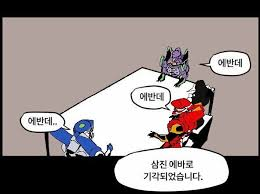

세 모델이 읽고, 서로의 해석을 확인합니다.
그래서, 리셋 언제?
같은 공지, 세 개의 해석. 결론은 근거가 모였을 때만.
이번 안건회의 기록을 불러오는 중

회의 결론아직 결론을
내리지 못했습니다.
내리지 못했습니다.
THREE MODELS. ONE SOURCE.실제 실행 기록 기준
모델의 의견은 완료 공지가 아닙니다. 의견 일치와 실제 Reset 발생을 구분합니다.
내 시간으로 확인하기
시간대 확인 중
최신 공지를 불러오는 중입니다.
공지 기록
원문 기준으로 기록합니다. 서로 다른 공지는 자동으로 합치지 않습니다.